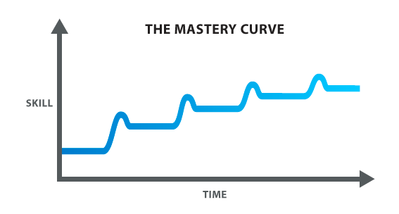

| The Hacker's Diet (John Walker) 2024-04-27 [tag_self] [tag_body] [tag_books] > This book is a compilation of what I learned. Six months after I decided being fat was a problem to be solved, not a burden to be endured, I was no longer overweight. Eu não acredito que deixei passar o review deste maravilhoso livro que já li duas vezes. Reli no final do ano passado porque precisava reeducar meus hábitos alimentares e parar de usar jejum intermitente como muleta de manutenção de peso, pois o corpo ao longo dos meses se acostuma e você não consegue mais perder peso porque seu metabolismo basal é muito baixo. |
| Treinamento do Datilógrafo (The Typewriter Training) 2024-03-30 [tag_self] Há fóruns e mais fóruns na internet cheio de escritores querendo saber como fazer para começar a escrever. Uma das técnicas mais eficazes é simplesmente sair escrevendo sem parar. Isso serve para bloqueios e reescritas inconscientes que fazemos ao tentar reformular uma frase assim que ela foi criada. Torna o ato de escrever mais próximo do pensamento em si: um fluxo ininterrupto de cognição interna. Erros não devem ser corrigidos. Nem acentos. Usar o backspace é proibido. Assim como nos velhos tempos da datilografia. |
| Perfeição Moral (Marco Aurélio) 2024-03-05 [tag_self] [tag_quotes] "Esta é a perfeição moral: viver cada dia como se fosse o último, sem agitação, sem preguiça, sem hipocrisia." |
| Flow com ênfase na teoria de sistemas 2023-10-03 [tag_self] [tag_books] Reli pela enésima vez minhas anotações sobre Flow, aquele [livro do Mihaly Csikszentmihalyi], e venho dessa vez com anotações das anotações com ênfase na teoria de sistemas. O resumo é que o self, esse sistema dinâmico que reconhecemos como nós, pode ser expandido ao se acoplar a qualquer outro sistema onde invistamos energia psíquica. Porém, para isso funcionar, devemos reorientar nossa atenção e focar, ou seja, empreender nossa energia psíquica, muito mais no sistema que está sendo a atividade do momento e muito menos em nós mesmos ou em outros inputs externos que não faz parte do sistema e que é apenas entropia. É quando o self vira o sistema que nós podemos resgatar novas informações que irão ser adicionadas ao sistema original. A isso chamamos aprendizado do mundo. Nosso ser se expande e nosso organismo ressoa em harmonia. |
| Felicidade e Pensamentos (Marco Aurélio) 2023-01-31 [tag_self] [tag_quotes] "A felicidade de sua vida depende da qualidade de seus pensamentos: portanto, guarde-se adequadamente e tome cuidado para não nutrir noções inadequadas à virtude e à natureza." |
| The Pickup Artist: The New and Improved Art of Seduction (Mystery) 2022-07-24 [tag_self] [tag_books] Uma série de duas temporadas apresenta um rapaz magro, bem alto e cheio de adereços. Ele junta um grupo de jovens desajustados sem nenhuma experiência em ficar com mulheres. Seu objetivo: torná-los mestres na arte de pegação. |
| Flow: The Psychology of Optimal Experience 2020-09-27 [tag_self] [tag_books] Este é um dos livros mais importantes que já li e acredito que pode ser muito importante para você também. Por isso quero dedicar algumas linhas para argumentar por que você deve lê-lo, ainda que ele seja denso demais para a maioria das pessoas. |
| Jejum de Dopamina 2020-08-29 [tag_self] [tag_body] Na verdade é um jejum de super estímulos, que tem por objetivo apagar o incêndio causado pelos neuroreceptores de dopamina de hábitos compulsivos em busca de prazer fácil para uma vez estabilizado em níveis saudáveis observarmos os gatilhos que nos faz voltar para esses hábitos, observando nossos impulsos para voltar a essas atividades, geralmente associados ao nosso estado emocional interno. Apenas dessa forma, seguindo o modelo de terapia cognitiva, para que o equilíbrio do sistema dopamínico se mantenha, e possamos apreciar como se deve atividades vistas hoje como chatas, como ler, escrever, meditar, passear ao ar livre. Ouvir. |
| Deep Work 2020-03-15 [tag_self] [tag_books] > "Let your mind become a lens, thanks to the converging rays of attention; let your soul be all intent on whatever it is that is established in your mind as a dominant, wholly absorbing idea." - Antonin-Dalmace Sertillanges |
| Comunicação em Prosa Moderna 2020-03-15 [tag_self] [tag_books] "Comunicação em Prosa Moderna", escrito por Othon M. Garcia em 1967, foi um dos livros de referência de quando iniciei a faculdade de Letras na FFLCH da USP. Adquiri uma cópia velha em um sebo com uma diagramação absurda, sem margens e com cheiro de mofado. Li de cabo a rabo. Atualmente eu encontrei a versão digital graças à comunidade do LeLivros, totalmente reformada para o formato digital após várias edições. A versão Kindle dá até gosto de ver, com suas inúmeras e famosas referências bibliográficas com que foi escrito, que ocupam pelo menos a quinta parte do livro, junto dos inúmeros exercícios no final. |
| Vida e Sonho (Henry David Thoreau) 2019-09-08 [tag_self] [tag_quotes] "Viva a vida que você sonhou." |
| Problemas (Rene Descartes) 2019-09-08 [tag_self] [tag_quotes] "Cada problema que eu resolvo se torna uma regra que serve mais tarde para resolver outros problemas." |
| On Writing (Stephen King) 2019-09-08 [tag_self] [tag_quotes] "Escreva com a porta fechada, reescreva com a porta aberta." |
| O Trabalho (Voltaire) 2019-09-08 [tag_self] [tag_quotes] "O trabalho nos livra de três males: tédio, vício, necessidade." |
| O Escritor (Thomas Mann) 2019-09-08 [tag_self] [tag_quotes] "O escritor é um indivíduo para o qual a escrita é mais dolorosa do que para as outras pessoas." |
| Ação (Goethe) 2019-09-08 [tag_self] [tag_quotes] "Não basta saber: temos que aplicar. Não basta querer: temos que fazer." "O que não começa hoje nunca termina amanhã." |
| Aqui e Agora (Eckhart Tolle) 2024-04-13 [tag_books] [tag_quotes] If I were to see it again and again, I might be able to extract an underlying logic from it, but the problem is, when a movie’s not worth seeing twice, it had better get the job done the first time through. |
| On Writing, por Stephen King 2019-08-16 [tag_self] [tag_books] Eu lembro que em algum momento entre ler On Writing Well, um livro de William Zinsser sobre melhorar a escrita, e estar escrevendo meus reviews diários sobre filmes comecei a ficar bem insatisfeito com a qualidade dos meus trabalhos. Isso não é novidade para mim, o eterno insatisfeito, e não me surpreendi quando me vi novamente buscando literatura para me aprimorar. Afinal de contas, quando não se está praticando é a hora de afiar seus instrumentos, e esse momento para um escritor não é quando se está escrevendo, mas lendo. |
| Leitura: How Technology Hijacks People’s Minds from a Magician and Google’ 2019-06-20 [tag_self] How Technology Hijacks People’s Minds -- from a Magician and Google’s Design Ethicist, de Tristan Harris, foi uma leitura inicial que o SendToKindle cortou, mas pretendo ler o texto completo. - Como filósofo, Tristan observa a mudança tecnológica através de algum parâmetro palpável, e usa para isso, mesmo sem querer, a praxeologia. Quando ele diz que as pessoas preferem entre checar o email em cinco segundos ou esperar na fila sem fazer nada elas preferem a primeira opção, ou entre ouvir um podcast de meia-hora sobre um assunto que elas gostariam muito de saber ou andar por 30 minutos em silêncio elas também escolhem a primeira opção. |
| Deep Work => Flow 2019-05-09 [tag_self] (Deep Work) => Flow - A proven Path to Satisfaction, de Robin Wieruch, é um resumo valioso de dois livros, um sobre deep work e outro sobre flow, e como ambos se relacionam. Robin é um programador e também leu On Writing Well (ele possui algumas notas sobre essa leitura também). |
| The ONE Thing 2019-04-12 [tag_quotes] [tag_self] [tag_books] The ONE Thing é um livro que comecei a ler inspirado na dica do Robin Wieruch, que já leu um ou dois livros que eu também já li. Este é um clássico da auto-ajuda empresarial e começa ensinando umas poucas e boas para o leitor comum, mas é particularmente inspirador para quem já sabe que as lições de Gary Keller servem mais para ele do que para qualquer outro ser humano no planeta. |
| On Writing Well 2019-02-03 [tag_self] [tag_books] On Writing Well de William Zinsser é considerado por muitos do Hackers News como uma ótima referência para se escrever bem não-ficção. Tenho minhas dúvidas. Mas justiça seja feita, o livro parece um Syd Field (Screenplay) para não-ficção, cheio de guidelines que podem auxiliar o escritor ainda amador tentando se profissionalizar e impressionar alguns editores por aí. |
| 12 Regras Para a Vida, por Jordan Peterson 2018-12-30 [tag_self] [tag_books] 12 Regras para a Vida, como o nome indica, é um livro de auto-ajuda, mas diferente do que você poderia esperar. Livros de auto-ajuda que usam o exemplo de vida do autor servem como guia apenas para... er... o autor. Já o livro do psicólogo/filósofo Jordan Peterson utiliza a sabedoria das narrativas antigas, dos usos e costumes das sociedades, aliado ao que a ciência já descobriu sobre nossa espécie para chegar a um denominador comum de quais são as regras mais valiosas para se viver uma vida significativa. Ah, sim, Peterson está menos preocupado com viver feliz do que viver com significado. "Precisamos de regras; quaisquer regras". Esse livro é a tentativa de elencar as melhores. |
| Os Axiomas de Zurique 2017-05-28 [tag_self] [tag_books] A primeira coisa que se aprende de verdade quando se fala em finanças pessoais é que tudo é especulação. Isso você aprende em um livrinho que li há muito tempo atrás. Li vários desses de finanças na minha "fase investidor", antes de programar para o mercado financeiro, mas o inesperadamente mais útil de todos, que li e reli incontáveis vezes, foi Axiomas de Zurique. E ele é um livrinho pequeno, de bolso e de ficção, que conta alguns causos divertidos e joga algumas noções que vão contra tudo e contra todos os conselhos mais reafirmados de toda a história de Wall Street. No entanto, são geralmente esses conselhos que fazem mais sentido na hora que os sinos dobram. Aqui vai a lista dos axiomas, em um parágrafo só, zipado, concentrado e poderoso: |
|
 Mastery: The Keys to Success and Long-Term Fulfillment 2017-03-14 [tag_self] [tag_books] O livro de George Leonard é um curto e didático passeio através dos mistérios que tornam o ser humano cada vez mais habituado ao seu "eudaimonia" aristotélico, ou seja, o estado de plenitude do ser que está ao alcance de todos que se derem a liberdade da melhora contínua em qualquer coisa que fizermos nesse mundo. |
| O Poder do Agora 2015-06-29 [tag_self] [tag_books] "Embora eu continuasse vivendo normalmente, tinha percebido que nada que eu viesse a fazer poderia mudar realmente a minha vida. Eu já tinha tudo de que necessitava." Essa é a moral por trás de O Poder do Agora, livro de Eckhart Tolle que mistura filosofia e uma pitada de religião em prol do bem-estar do ser humano. Não que ele use muita religião, e se usa, é mais para o lado budista/asiático dos monges tibetanos: aprendendo a se libertar de sua mente. Ele adequa essa filosofia ao cristianismo e chama mais adeptos para a iluminação independente de seu profeta ou deus. |